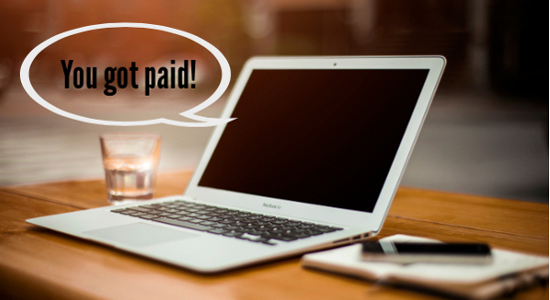

Banking 102.2: Checking
Scroll down and click through the slide show to see the tools used to withdrawal money from your checking account.
Direct Deposit
While you can use deposit and withdrawal slips for checking accounts, direct deposit is also a convenient option.This allows employers to electronically deposit your paycheck into your checking account so your funds are immediately available.
Back | NextDirect Deposit | Checks | Debit